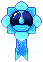
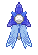
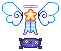
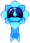
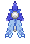
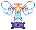

the bright
I'll write a better summary eventually; a shinigami girl with goals to just do her best. Manga obsessed, and may come off a little lazy no thanks to Rangiku's influence, but she does her job well when the time comes.
She used to be shipped with Tōshirō Hitsugaya.


the bright
I'll write a better summary eventually; a shinigami girl with goals to just do her best. Manga obsessed, and may come off a little lazy no thanks to Rangiku's influence, but she does her job well when the time comes.
Character
Likes
- reading manga
- trinket collecting
- friendly ribbing
- miniature ice sculptures
Dislikes
- fire (arsonphobia)
- people moving her stuff
- boring meetings
- being treated like a kid
Personality
Resu was raised by her brother to be respectable to the higher-ups, though she has a tendency to lose her more respectful tone and put on a more general one if she is close to that person. She tries to get along with all the people she meets and is quick to develop a friendly and general tone with people.
Resu’s mood fluctuates easily depending on the situation she’s in, at one moment she could be joking around with a friend, and then irritated after what she may perceive as an insult.
Resu has a perverted side only seen when around her usual friends and when used to tease her captain. She’s the kind of person who would whisper fantasies into someone’s ear, or crack a perverse joke that would make an adult blush, though when it comes to others acting like that towards her, she becomes more quiet and embarrassed.
Her ‘brother’ partially developed her perverted personality at a young age, as he was genuinely openly perverted around most people and Resu generally caught his words and asked him about them (much to Chikao’s embarrassment). This also helped Resu bond to Rangiku, the two becoming close friends and gossipers.
Although she has a carefree personality, Resu is dedicated to her squad and her work and has been since she joined Squad 10. Her brother also taught her at a young age to be dedicated to her position and to be of help to her captain. She tries her best to aid Toshiro when she can with paperwork. She can also lose her carefree attitude when training or in a battle, gaining a more serious one.
Resu is one to trust people with her life, but once her trust is broken, it’s hard to gain it back; it would take months and maybe even years to start regaining her trust. She’ll act cold and distant to people who broke her trust.
Story
Resu was born on the outskirts of Karakura town and lived in a small house with her parents. Her life was one of what you’d expect any standard young girl to be in Japan, mostly with her mother and such on. One night when she was roughly the age of 6, a riot was occurring during the middle of the night, and in the mindless rage of the villagers, the house Resu and her parents were in was caught on fire. Resu awoke first and got her parents up as well, and they got on top of the roof of their house, trapped by the flames. In panic Resu jumped off and slammed to the ground, breaking her bones. She passed away from internal bleeding and was later found by a shinigami on duty – being sent to the Soul Society afterwards.
In the Soul Society, Resu grew up in the Junrinan and was raised by an elderly woman that offered her a job to sell merchandise (mostly food rather) in her store. During this time she met Momo and they became mutual friends. One day a shinigami stopped by the store, by the name of Chikao Sosora. The blonde wanted to adopt Resu, and explained to her what shinigami are, but he would have to sneak her in… after thinking about it for a while, Resu decided the path of a shinigami sounds like one she would enjoy, as it comes to protecting souls and actually being able to do something when the time came.
So Resu was raised by Chikao in the thirteenth division, trained by him as well until she could join the Shino Academy. Resu got in on her first try, but in her last year she failed, having to do one more year to be able to graduate. During this time Resu got her shikai for her zanpakuto.
Resu joined the tenth division as the sixth seat and has been there since.
Moodboard
Design Notes
Design Notes
- Resu’s outfit has also been altered a slight amount. Her shitagi and kosode are more fitted to her body and the shoulders are also cut and the edges are sown to make it look natural.
Trivia
- She used to be shipped with Toshiro Hitsugaya, though by the end of it, I dropped that ship.
- She was more prominent as an OC way back in 2012-2014.
- Sadly, a lot of the old art I had made of her got nuked with my deviantART account I deactivated, minus stray files in my folders.
- She has a fear of fire (arsonphobia), or more specifically, having fire trap her.
- One of Resu’s hobbies is making miniature sculptures out of water, turning them into ice if she likes them, or animating them (like a small cat that could walk around on the desk).
- Resu does have a habit of keeping her manga collection in a specific order, and will snap at anyone who dares rearrange it, or put a book back in the wrong place.
 







{kind=link}
{kind=link}
{kind=link}
{kind=link}
{kind=link}